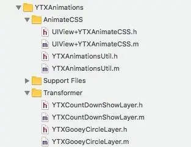
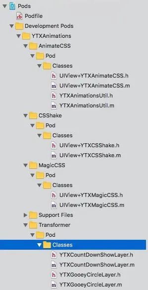
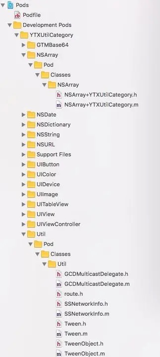
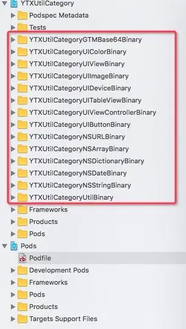

这篇文章主要想介绍以下几个部分：
- subspecs基本概念
- 实际应用的好处
- 如何对含有subspecs的CocoaPods库进行二进制化
什么是CocoaPods的subspecs
来一个直观点的。顺便为自己的YTXAnimations做个广告。
在Podfile中，它是这样的：
pod 'YTXAnimations', '~> 1.2.4', :subspecs => ["AnimateCSS", "Transformer"]
在App中Pods/YTXAnimations文件目录下它是这样的：

在CocoaPods项目开发时是这样的：

在podspec里是这样的：
YTXAnimateCSS = { :spec_name => "AnimateCSS" }
YTXCSShake = { :spec_name => "CSShake" }
YTXMagicCSS = { :spec_name => "MagicCSS" }
$animations = [YTXAnimateCSS, YTXCSShake, YTXMagicCSS]
$animations.each do |sync_spec|
s.subspec sync_spec[:spec_name] do |ss|
specname = sync_spec[:spec_name]
sources = ["Pod/Classes/UIView+YTX#{specname}.*", "Pod/Classes/YTXAnimationsUtil.{h,m}"]
ss.source_files = sources
if sync_spec[:dependency]
sync_spec[:dependency].each do |dep|
ss.dependency dep[:name], dep[:version]
end
end
end
end
s.subspec "Transformer" do |ss|
ss.source_files = ["Pod/Classes/YTXGooeyCircleLayer.{h,m}", "Pod/Classes/YTXCountDownShowLayer.{h,m}"]
end
==在一个podspec里我可以定义它的subspecs，给使用方提供了一种灵活的方式去获取相关源码，而不是全部源码。subspec之间也可以有依赖关系，依赖其他第三方库等。==
如果是这样的用的话，就是全量。
pod 'YTXAnimations', '~> 1.2.4'
也有不少在github第三方库用了subspecs。比如：ARAnalytics。
谈谈作用：subspecs这种模式特别适合组件化开发。
比如有两个业务team A和B。他们各自维护一个业务组件A和业务组件B。原则上业务组件A和业务组件B之间不能相互依赖。但是很多时候组件A需要调用组件B的功能，接受组件B的回调。架构的时候我们会使用依赖协议或者依赖下沉等等方式去除他们之间的耦合。
但问题是我们还是需要集成在一起调试的。
一般做法就是在业务组件A的Example项目的Podfile中，加上依赖业务组件B：
target 'TestBusinessAExampleApp' do
pod 'BusinessA', :path => "../"
pod 'BusinessB', '~>1.2.1'
end
然后在Example App中串联起A和B，以达到调试的目的。
组件B作为一个业务肯定是很庞大的，所以编译慢。二进制化可以解决这个问题。作为Team A的人，我不需要关注组件B是否太大编译慢，依赖等问题。
举个例子，比如外卖和电影，外卖会送电影票。
很容易想到！业务组件A只依赖业务组件B的部分。组件B应该把这部分其实对外的内容尽量做成一个subspec或者正常结构划分，划分成依赖其中几个subspec。这样业务组件A需要关心的事就更少了。当发生问题，Team A不得已想要查看业务组件B的源代码以查看是否问题出在了业务组件B的时候，Team A的人员面对的不是整个业务组件B的业务源代码，而是部分其实对外的源代码。缩小依赖的二进制文件大小或源代码数量也是有显而易见的好处的。
嗯，调试源代码，我们应该：
- 删除Pods目录
- pod cache clean --all
- IS_SOURCE=1 pod install
嗯，这已经在公司内部达成了一致，使用IS_SOURCE。
现在的业务组件A的Example项目的Podfile中应该变成了这样：
target 'TestBusinessAExampleApp' do
pod 'BusinessA', :path => "../"
pod 'BusinessB', '~>1.2.1' , :subspecs => ["SomeBusinessXXX"]
end
进一步的如果有个业务组件C要和业务组件B打交道，它的Example项目的Podfile应该这样写：
target 'TestBusinessCExampleApp' do
pod 'BusinessC', :path => "../"
pod 'BusinessB', '~>1.2.1' , :subspecs => ["SomeBusinessTTT"]
end
在主项目App中的Podfile是这样写：
target 'DaMeiTuanApp' do
pod 'BusinessA', '~>3.0.5'
pod 'BusinessB', '~>1.2.1'
pod 'BusinessC', '~>2.2.0'
end
下面开始说说subspec如何二进制化，如何在podspec中定义
==如果没有特别说明，没有讲到细节的内容或方式都应该在教程一里==
在教程一里面提到有subspecs的CocoaPods的组件二进制化方案，说了两个方案。最后选择的方案：是对每一个subspec都做份二进制并保持它们之间依赖的相互关系。
为什么不使用全集？也就是把所有源码都变成.a呢？
- 使用方的Podfile就需要改写了。
- 使用方本来希望只用AnimateCSS和Transformer，现在不得不把CSShake和MagicCSS也包含进来了。
接下来以实际项目YTXUtilCategory作为例子来讲解。
方案就是：是对每一个subspec都做份二进制并保持它们之间依赖的相互关系。
YTXUtilCategory是我们的一个提供公共通用方法和Category的类。在二进制化之前它大概是长这个样子的：

二进制化之前它的podspec是这样的：
Pod::Spec.new do |s|
.......
_all_names = []
_GTMBase64 = { :spec_name => "GTMBase64", :source_files => ['Pod/Classes/GTMBase64/GTM*.{h,m}' ] }
_UIColor = { :spec_name => "UIColor", :source_files => ['Pod/Classes/UIColor/UIColor+*.{h,m}' ] }
_UIView = { :spec_name => "UIView", :source_files => ['Pod/Classes/UIView/UIView+*.{h,m}' ] }
_UIImage = { :spec_name => "UIImage", :source_files => ['Pod/Classes/UIImage/UIImage+*.{h,m}' ] }
_UIDevice = { :spec_name => "UIDevice", :source_files => ['Pod/Classes/UIDevice/UIDevice+*.{h,m}' ] }
_UITableView = { :spec_name => "UITableView", :source_files => ['Pod/Classes/UITableView/UITableView+*.{h,m}' ] }
_UIViewController = { :spec_name => "UIViewController", :source_files => ['Pod/Classes/UIViewController/UIViewController+*.{h,m}' ] }
_UIButton = { :spec_name => "UIButton", :source_files => ['Pod/Classes/UIButton/UIButton+*.{h,m}' ] }
_NSURL = { :spec_name => "NSURL", :source_files => ['Pod/Classes/NSUR/NSURL+*.{h,m}' ] }
_NSArray = { :spec_name => "NSArray", :source_files => ['Pod/Classes/NSArray/NSArray+*.{h,m}' ] }
_NSDictionary = { :spec_name => "NSDictionary", :source_files => ['Pod/Classes/NSDictionary/NSDictionary+*.{h,m}' ] }
_NSDate = { :spec_name => "NSDate", :source_files => ['Pod/Classes/NSDate/NSDate+*.{h,m}' ] , :dependency => [{:name => "DateTools", :version => "~> 1.0" }] }
_NSString = { :spec_name => "NSString", :source_files => ['Pod/Classes/NSString/NSString+*.{h,m}' ],
:sub_dependency => [_GTMBase64] }
_Util = { :spec_name => "Util", :source_files => ['Pod/Classes/Util/*.{h,m}' ]}
_FoundationAll = { :spec_name => "FoundationAll", :sub_dependency => [_NSString, _NSURL, _NSDate, _NSArray, _NSDictionary ] }
_UIAll = { :spec_name => "UIAll", :sub_dependency => [_UIColor, _UIView, _UIImage, _UIButton, _UIDevice, _UITableView, _UIViewController ] }
_all_subspec = [_GTMBase64, _UIColor, _UIView, _UIImage, _UIDevice, _UITableView, _UIViewController, _UIButton, _NSURL, _NSDate, _NSArray, _NSString, _NSDictionary, _Util, _FoundationAll, _UIAll]
_all_subspec.each do |spec|
s.subspec spec[:spec_name] do |ss|
specname = spec[:spec_name]
_all_names << specname
if spec[:source_files]
ss.source_files = spec[:source_files]
end
if spec[:sub_dependency]
spec[:sub_dependency].each do |dep|
ss.dependency "YTXUtilCategory/#{dep[:spec_name]}"
end
end
if spec[:dependency]
spec[:dependency].each do |dep|
ss.dependency dep[:name], dep[:version]
end
end
end
end
spec_names = _all_names[0...-1].join(", ") + " 和 " + _all_names[-1]
s.description = "拆分了这些subspec:#{spec_names}"
end
通过分析代码可以知道：
- 有这些subspecs：GTMBase64, UIColor, UIView, UIImage, UIDevice, UITableView, UIViewController, UIButton, NSURL, NSDate, NSArray, NSString, NSDictionary, Util, FoundationAll, UIAll
- NSDate依赖第三方DateTools。
- NSString依赖兄弟GTMBase64。
- FoundationAll依赖兄弟subspecs，自己没什么内容，或者说提供一个灵活的方式一口气纳入所有相关Foundation内容。
- UIAll依赖兄弟subspecs，和FoundationAll想要做的是一样的。
相信各位读者看了这个podspec也就知道怎么创建自己的subspec了。或者看看ARAnalytics的podspec。
在App中的Podflie是这样用的：
pod 'YTXUtilCategory','~> 1.2.0'
或
pod 'YTXUtilCategory','~> 1.2.0', :subspecs => ["UIColor", "FoundationALL"]
从分析的结果来看我应该创建这些target：

在Example/Podfile中根据target的名字增加以下内容并pod install：
target 'YTXUtilCategoryGTMBase64Binary' do
end
.........省略
target 'YTXUtilCategoryNSDateBinary' do
pod 'DateTools', '~> 1.0'
end
target 'YTXUtilCategoryUtilBinary' do
end
注意YTXUtilCategoryNSDateBinary，把它的第三方依赖加上。版本和podspec里描写的一致。
在根目录增加两个shell脚本。
buildbinary.sh和教程一的基本一致，只是改了第一行：
#获得第一个参数
PROJECT_NAME=$1
# 编译工程
BINARY_NAME="${PROJECT_NAME}Binary"
buildallbinary.sh
pushd "$(dirname "$0")" > /dev/null
SCRIPT_DIR=$(pwd -L)
popd > /dev/null
#也可以写个for循环
./buildbinary.sh YTXUtilCategoryGTMBase64
......省略
./buildbinary.sh YTXUtilCategoryUtil
执行
./buildallbinary.sh
得到结果：
![subspecsbinarybuildresult] (https://cloud.githubusercontent.com/assets/2350193/16981721/6ec1af32-4e9e-11e6-9c4a-37e6018ebf5c.png)
{kind=link}
更改podspec内容为：
Pod::Spec.new do |s|
......省略
_all_names = []
_GTMBase64 = { :spec_name => "GTMBase64"}
_UIColor = { :spec_name => "UIColor"}
_UIView = { :spec_name => "UIView"}
_UIImage = { :spec_name => "UIImage"}
_UIDevice = { :spec_name => "UIDevice"}
_UITableView = { :spec_name => "UITableView"}
_UIViewController = { :spec_name => "UIViewController"}
_UIButton = { :spec_name => "UIButton"}
_NSURL = { :spec_name => "NSURL"}
_NSArray = { :spec_name => "NSArray"}
_NSDictionary = { :spec_name => "NSDictionary"}
_NSDate = { :spec_name => "NSDate", :dependency => [{:name => "DateTools", :version => "~> 1.0" }] }
_NSString = { :spec_name => "NSString", :sub_dependency => [_GTMBase64] }
_Util = { :spec_name => "Util"}
_temp = [_GTMBase64, _UIColor, _UIView, _UIImage, _UIDevice, _UITableView, _UIViewController, _UIButton, _NSURL, _NSArray, _NSDictionary, _NSDate, _NSString, _Util]
puts '-------------------------------------------------------------------'
if ENV['IS_SOURCE']
puts '-------------------------------------------------------------------'
puts "Notice:#{s.name} is source now"
puts '-------------------------------------------------------------------'
_temp.each do |spec|
spec[:source_files]=["Pod/Classes/#{spec[:spec_name]}/*.{h,m}"]
end
else
puts '-------------------------------------------------------------------'
puts "Notice:#{s.name} is binary now"
puts '-------------------------------------------------------------------'
_temp.each do |spec|
spec[:source_files]=["Pod/Products/#{s.name}#{spec[:spec_name]}/include/**"]
spec[:public_header_files]=["Pod/Products/#{s.name}#{spec[:spec_name]}/include/*.h"]
spec[:vendored_libraries]=["Pod/Products/#{s.name}#{spec[:spec_name]}/lib/*.a"]
end
end
_FoundationAll = { :spec_name => "FoundationAll", :sub_dependency => [_NSString, _NSURL, _NSDate, _NSArray, _NSDictionary ] }
_UIAll = { :spec_name => "UIAll", :sub_dependency => [_UIColor, _UIView, _UIImage, _UIButton, _UIDevice, _UITableView, _UIViewController ] }
_all_subspec = [_GTMBase64, _UIColor, _UIView, _UIImage, _UIDevice, _UITableView, _UIViewController, _UIButton, _NSURL, _NSDate, _NSArray, _NSString, _NSDictionary, _Util, _FoundationAll, _UIAll]
_all_subspec.each do |spec|
s.subspec spec[:spec_name] do |ss|
specname = spec[:spec_name]
_all_names << specname
if spec[:source_files]
ss.source_files = spec[:source_files]
end
if spec[:public_header_files]
ss.public_header_files = spec[:public_header_files]
end
if spec[:vendored_libraries]
ss.ios.vendored_libraries = spec[:vendored_libraries]
end
if spec[:sub_dependency]
spec[:sub_dependency].each do |dep|
ss.dependency "YTXUtilCategory/#{dep[:spec_name]}"
end
end
if spec[:dependency]
spec[:dependency].each do |dep|
ss.dependency dep[:name], dep[:version]
end
end
end
end
spec_names = _all_names[0...-1].join(", ") + " 和 " + _all_names[-1]
s.description = "拆分了这些subspec:#{spec_names}"
end
难点其实在于podspec如何写，如何描述subspec之间的关系，如何拆分subspec。
假如a.h和b.h都用到了c.h，而a.h隶属于subspec A，而b.h隶属于subspec B。那你应该做一个subspec C其中包含c.h。而A和B都依赖C。
要避免a.h依赖b.h，b.h依赖a.h这种循环依赖的问题。
到此为止，含有subspec的CocoaPods库就这么简单的完成了。
后记，在做subspec二进制化遇到的问题
_all_sync.each do |sync_spec|
...
ss.prefix_header_contents = "#define YTX_#{specname.upcase}_EXISTS 1"
...
end
注意ss. ss.prefix_header_contents这段。加了一个宏。然后在这里会用到:
#import "YTXRestfulModel.h"
#ifdef YTX_USERDEFAULTSTORAGESYNC_EXISTS
#import "YTXRestfulModelUserDefaultStorageSync.h"
#endif
#ifdef YTX_AFNETWORKINGREMOTESYNC_EXISTS
#import "AFNetworkingRemoteSync.h"
#endif
#ifdef YTX_YTXREQUESTREMOTESYNC_EXISTS
#import "YTXRestfulModelYTXRequestRemoteSync.h"
#endif
#ifdef YTX_FMDBSYNC_EXISTS
#import "YTXRestfulModelFMDBSync.h"
#import "NSValue+YTXRestfulModelFMDBSync.h"
#endif
在源码的情况下，如果我想要用YTXRequestRemote这个subspec，那么引入YTXRequestRemote时会自带宏YTX_YTXREQUESTREMOTESYNC_EXISTS，YTXRestfulModel在编译时会根据宏引入相关头文件。
问题来了，宏都是预编译的。当我编译出二进制时，内容已经决定了。这样就丧失了subspec的动态性了。所以关键的问题在于当初设计的时候没有考虑好。
希望大家看到这个例子后，避免将来遇到相思的问题。目前没有想到好的解决方案，所以这个库并没有二进制化。